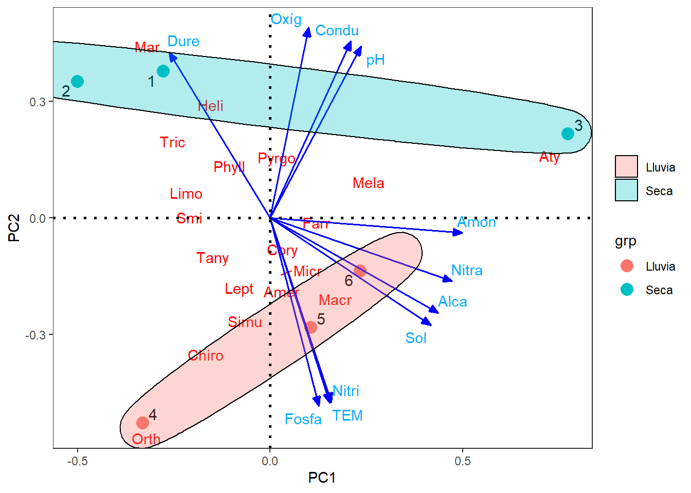

Resumen
El presente análisis se realiza en los datos de abundancia y la composición de taxones de macroinvertebrados acuáticos, así como once parámetros fisicoquímicos tomados en cuatro quebradas del PNN Tayrona durante la época de lluvias y d sequía.
Se realiza un (1) análisis de diversidad alfa y (2) diversidad beta, (3) un análisis de ordenación por gradientes (pca y nmds) y (4) una prueba de hipótesis para valorar las diferencias entre la época de lluvias y de sequía, con datos de abundancias de taxones de macroinvertebrados y de parámetros fisicoquímicos.
Los resultados muestran lo siguiente:
- Diversidad alfa. Fueron 54 los taxones registrados para las cuatro quebradas, aclarando que la quebrada de San Lucas (#4) solo cuenta con datos de lluvia.
- Existen muy pocas diferencias entre periodos climáticos (Figura 6 y Figura 7), con menor completitud de las muestras y un mayor número de taxones sin detectar en lluvias (Tabla 4 y Tabla 5), posiblemente por el efecto de las crecientes y de la topografía de estas quebradas de poca longitud y de una pendiente considerable.
- Para el caso de las quebradas, Boquita y Santa Rosa presentaron baja completitud (< 0.9) y un número considerable de taxones sin detectar (11 y 12 respectivamente) (Tabla 12 y Tabla 13). La mayor riqueza se concentra en la quebrada Masón, seguida de Santa Rosa, Boquita y San Lucas (Figura 8).
- Diversidad beta. Según la propuesta de Baselga (2010), esta diversidad es baja y dominada por el anidamiento (Tabla 16), lo cual es de esperar, debido que es muy corta la distancia de separación entre las quebradas, lo cual no influye en los patrones de recambio en los ensamblajes y por el contrario domina el anidamiento, enfocado a que de una quebrada con mayor riqueza de taxones (Masón) se puede estar derivando o anidando la riqueza del resto de quebradas.
- De acuerdo a la propuesta de Whittaker (1960), se identifican trece taxones que contribuyen al patrón de variación en la composición definida por esta diversidad y que pueden ser objetos de conservación (Amer, Ata, Aty, Chiro, Farr, Heli, Limo, Macr, Mar, Mela, Orth, Tany, Tric). Boquita es la quebrada que más aporta a la diversiad beta, seguida de Santa Rosa, debido a su mayor disponibilidad de hábitats para los taxones (Figura 10).
- La prueba de permutaciones de Mantel, permitió demostrar que no hay diferencias entre la diversidad beta de los periodos climáticos.
- Gradientes de diveridad. Las técnicas de ordenación (pca y nmds) permitieron identificar taxones y variables fisicoquímicas asociadas a las quebradas y a los dos periodos climáticos evaluados, en conde el periodo de lluvias se asocia con un mayor número de taxones y nutrientes, el periodo de sequía se asocia una menor riqueza de taxones, mayor oxigenación, conductividad, pH y dureza del agua.
- Pruebas de hipótesis. La prueba de varianzas multivariadas - permanova, no encontró diferencias entre las dos épocas climáticas, ni en los taxones encontrados ni en los parámetros fisicoquímicos evaluados. A nivel de relaciones, se encontro que cinco de las once variables ambientales, son las que más influyen en el patrón de abundancia y distribución de los taxones (la conductividad, los nitritos, el amonio, el pH y los sólidos totales).
Análisis de los datos
Diversidad alfa. Se calculó con los estimadores clásicos para cada quebrada y por periodos climáticos, incluyendo a los taxones no detectados, a partir de curvas RAD (rango-abundancia), modelos de abundancia y estimaciones de diversidad en cuatro pasos, estos últimos, según la propuesta de Chao et al. (2020).
Diversidad beta. Se realizó con la propuesta de Baselga (2019), mediante el índice de disimilitud de disimilitud de Sorensen (βsor), la cual se divide en dos componentes aditivos: (1) el recambio de taxones (βsim) y (2) el anidamiento (βnes) (βsor = βsim + βnes). A partir de estos estimadores se analizó la diversidad beta de las cuatro quebradas, entre las épocas climáticas de lluvia y de sequía y entre parejas de localidades.
Beta general. La diversidad beta total se analizó por la descomposición de la diversidad beta en el componente LCBD (contribución de las localidades a la diversidad beta) y el componente SCBD (contribución relativa de los taxones a la diversidad beta).
Beta entre periodos climáticos. Para comparar diferencias entre la diversidad beta de las épocas, se utilizó el estadístico de Mantel, de acuerdo con las recomendaciones de Baselga (2010) y los procedimientos de Oksanen (2022).
Beta entre quebradas y periodos climáticos. Para la clasificación de las quebradas a partir de la diversidad beta y de sus componentes aditivos de recambio y de anidamiento, se realizaron dendogramas de similitud, con la distancia de Sorensen y el método de agrupamiento UPGMA, de acuerdo con la propuesta de Filgueiras et al. (2016).
Análisis de gradientes. La caracterización de las quebradas y de las épocas de lluvia y de sequía, se realizó con la abundancia y composición de los taxones de macroinvertebrados, así como las variables fisicoquímicas, utilizando un análisis de componentes principales (pca) y un escalamiento multidimensional no métrico (nmds), con la propuesta de Borcard et al. (2018) y de Rodríguez-Barrios (2023). Todos los análisis se realizaron utilizando las librerías betapart y vegan que forman parte del programa R, versión 4.3.0. (Equipo central de desarrollo de R, 2023).
Pruebas de hipótesis. Se probará si existen diferencias entre los periodos climáticos, para los datos de abundancia de taxones y para las variables fisicoquímica, empleando análisis de varianza multivariadas permutacionales (permanovas) y además se evaluará la relación entre las variables ambientales y la distribución de los taxones con un BIOENV.
Cargar las librerías
Las librerías requeridas por este reporte, permitirán correr los diferentes análisis de diversidad y de gradientes multivariados.
Cargar la base de datos
En este paso, se cangan las bases de datos generales con valores de abundancia y de presencia-ausencia, requeridas para algunos análisis de diversidad.
1. Diversidad Alfa (local)
1.1 Diagramas de rangos de abundancia de Whittaker.
1.1.1 Diagramas de rangos de abundancia por quebradas + épocas climáticas
Para propósitos de este ejercicio se realizarán los diagramas con los diez (15) taxones de macroinvertebrados acuáticos más abundantes en las localidades evaluadas. Este diagrama permite hacer una exploración de los patrones de abundancia de los principales taxones de las muestras en comparación, como complemento a los modelos paraétricos a realizar.
Se filtran los datos de abundancia por cada época climática. Posteriormente se inserta una columna de rangos de abundancia y otra columna de abundancia relativa. Finalmente se filtran a los 15 taxones más abundantes, para que las curvas no se saturen (Tabla 1).
| Taxones | Época | Abundancia | Rango | Ab_rel |
|---|---|---|---|---|
| Tric | E1A | 679 | 54 | 0.106 |
| Mar | E2A | 497 | 54 | 0.077 |
| Aty | E3A | 448 | 54 | 0.070 |
| Orth | E1B | 1222 | 54 | 0.190 |
| Chiro | E2B | 13 | 54 | 0.002 |
| Aty | E3B | 65 | 54 | 0.010 |
La quebrada con mayor proporción de taxones dominantes es la E1 (Masón) para los periodos de sequía y de lluvia (A y B), seguida de las quebradas E2 en sequía (Santa Rosa) y E3 (Boquita) en sequía y lluvia (Figura 1).

1.1.2 Diagramas de rangos de abundancia por quebradas
Se filtran los datos de abundancia por cada quebrada. El resto del procedimiento es similar al anterior, filtrando al final a los 15 taxones más abundantes, para que las curvas no se saturen (Tabla 2).
| Taxones | Quebrada | Abundancia | Rango | Ab_rel |
|---|---|---|---|---|
| Orth | Masón | 1235 | 54 | 0.192 |
| Mar | StaRosa | 498 | 54 | 0.077 |
| Aty | Boquita | 513 | 54 | 0.080 |
| Chiro | SanLucas | 73 | 54 | 0.011 |
| Tric | Masón | 710 | 53 | 0.110 |
| Heli | StaRosa | 121 | 53 | 0.019 |
La quebrada con mayor proporción de taxones dominantes es la Masón, seguida de las quebradas Santa Rosa, Boquita y San Lucas (solo tiene datos en lluvia) en sequía y lluvia (Figura 2).

1.1.3 Diagramas de rangos de abundancia por épocas climáticas
Se filtran los datos de abundancia por cada época climática. El resto del procedimiento es similar al anterior, filtrando al final a los 15 taxones más abundantes, para que las curvas no se saturen (Tabla 3).
| Taxones | Época | Abundancia | Rango | Ab_rel |
|---|---|---|---|---|
| Mar | Sequía | 839 | 54 | 0.130 |
| Orth | Lluvia | 1244 | 54 | 0.193 |
| Tric | Sequía | 727 | 53 | 0.113 |
| Chiro | Lluvia | 382 | 53 | 0.059 |
| Aty | Sequía | 496 | 52 | 0.077 |
| Tany | Lluvia | 126 | 52 | 0.020 |
El periodo de sequía es el que presenta mayor número de taxones dominantes, comparado al de lluvia (Figura 3).
Analizar presencia de Phylloicus en lluvia

1.2 Modelos de rango - riqueza - abundancia (RAD)
Son cuatro los modelos en los que se diagnostican los patrones de diversidad de cada muestra: nulo o de vara quebrada (brokenstick), geométrico o de preferencia (premption), log-normal, y los modelos lineales generalizados (glm) de taxones abundantes o dominantes son: los modelos logarítmicos o Zipf y Zipf-Mandelbrot.
El comando radfit (ajuste de Modelos de rango - riqueza - abundancia - RAD), compara los modelos: Nulo (vara quebrada), Preemption, log-normal, Zipf y Mandelbrot. definiendo el mejor ajuste, utilizando los criterios de información de Akaike (AIC) y los Bayesianos o de Schwartz (BIC). Masón y Santa Rosa en sequía son las quebradas que se ajustan a modelos de alta diversidad (modelo lognormal), el resto de quebradas se ajustan a modelos de baja diversidad (Zipf y Premption).
1.2.1 Modelos de la quebrada Mason en sequía (E1A).
Los modelos RAD que se ajustan mejor a los datos, son los que presenten menor AIC y BIC. Para esta quebrada en sequía los datos se ajustan al modelo lognormal (menor AIC y BIC), demostrando un buen patrón de diversidad en la época seca.
RAD models, family poisson
No. of species 40, total abundance 2066
par1 par2 par3 Deviance AIC BIC
Null 1212.557 1390.814 1390.814
Preemption 0.18057 466.927 647.184 648.873
Lognormal 2.5359 1.7761 20.613 202.870 206.248
Zipf 0.36227 -1.3227 106.621 288.878 292.255
Mandelbrot 1.2816 -1.7647 1.2011 64.822 249.079 254.146
1.2.2 Modelos de la quebrada Mason en lluvia (E1B).
Para esta quebrada enlluvia los datos se ajustan al modelo Zipf (menor AIC y BIC), demostrando un menor patrón de diversidad en la época lluvia.
RAD models, family poisson
No. of species 39, total abundance 2165
par1 par2 par3 Deviance AIC BIC
Null 3164.020 3318.446 3318.446
Preemption 0.28743 1183.755 1340.181 1341.845
Lognormal 1.501 2.4602 118.302 276.728 280.056
Zipf 0.53208 -1.7487 84.982 243.409 246.736
Mandelbrot 0.53208 -1.7487 9.5381e-23 84.982 245.409 250.399
1.2.3 Modelos de la quebrada Santa Rosa en sequía (E2A).
Para esta quebrada en sequía los datos se ajustan al modelo lognormal (menor AIC y BIC), demostrando un buen patrón de diversidad en la época seca.
RAD models, family poisson
No. of species 30, total abundance 1119
par1 par2 par3 Deviance AIC BIC
Null 771.372 896.525 896.525
Preemption 0.23469 349.179 476.332 477.734
Lognormal 2.1188 1.8612 51.280 180.433 183.236
Zipf 0.42599 -1.4529 68.259 197.412 200.214
Mandelbrot 0.426 -1.4529 8.8083e-06 68.259 199.412 203.616
1.2.4 Modelos de la quebrada Santa Rosa en lluvia (E2B).
Para esta quebrada en lluvia los datos se ajustan al modelo Zipf (menor AIC y BIC), demostrando un menor patrón de diversidad en la época lluvia.
RAD models, family poisson
No. of species 19, total abundance 53
par1 par2 par3 Deviance AIC BIC
Null 6.2792 56.0259 56.0259
Preemption 0.15491 5.1336 56.8803 57.8247
Lognormal 0.64825 0.91315 2.9002 56.6468 58.5357
Zipf 0.24994 -0.90525 1.4324 55.1791 57.0680
Mandelbrot 0.42131 -1.1043 0.69705 1.2839 57.0306 59.8639
1.2.5 Modelos de la quebrada Boquita en sequía (E3A).
Para esta quebrada en sequía los datos se ajustan al modelo Zipf (menor AIC y BIC), demostrando un menor patrón de diversidad en la época seca.
RAD models, family poisson
No. of species 12, total abundance 525
par1 par2 par3 Deviance AIC BIC
Null 866.646 907.319 907.319
Preemption 0.74152 141.088 183.762 184.247
Lognormal 0.2324 3.3672 40.541 85.215 86.184
Zipf 0.83487 -3.0057 14.837 59.510 60.480
Mandelbrot 0.83487 -3.0057 9.6647e-08 14.837 61.510 62.965
1.2.6 Modelos de la quebrada Boquita en lluvia (E3B).
Para esta quebrada en sequía los datos se ajustan al modelo Premption, geométrico o de preserencia (menor AIC y BIC), demostrando un bajo nivel de diversidad en la época lluvia.
RAD models, family poisson
No. of species 24, total abundance 335
par1 par2 par3 Deviance AIC BIC
Null 52.2330 139.8250 139.8250
Preemption 0.19485 5.8501 95.4421 96.6202
Lognormal 1.9147 1.2672 29.3491 120.9411 123.2972
Zipf 0.29028 -1.0707 64.1202 155.7122 158.0683
Mandelbrot 1.5019e+25 -14.545 59.034 5.1763 98.7683 102.3025
1.2.7 Modelos de la quebrada San Lucas en lluvia (E4B).
Para esta quebrada en sequía los datos se ajustan al modelo Zipf (menor AIC y BIC), demostrando un menor patrón de diversidad en la época de lluvia.
RAD models, family poisson
No. of species 20, total abundance 170
par1 par2 par3 Deviance AIC BIC
Null 72.3653 135.1774 135.1774
Preemption 0.26832 36.6957 101.5079 102.5036
Lognormal 1.0206 1.6184 7.7629 74.5750 76.5665
Zipf 0.43228 -1.4225 2.4849 69.2971 71.2885
Mandelbrot 0.53697 -1.5134 0.16701 2.3779 71.1901 74.1773
1.3 Valoración de la diversidad en cuatro pasos, propuesta por Chao et al. (2020).
Este procedimiento permite calcular los siguientes cuatro pasos o insumos: (1) la completitud o integridad de la muestra, (2) la diversidad asintótica, (3) la diversidad no asintótica y (4) la uniformidad de las abundancias (Chao et al. 2020).
1.3.1 Valoración por quebradas y por épocas
Primero se corre el procedimiento, con el comando iNEXT4steps, el cual general los insumos de diversidad en los cuatro pasos propuestos por Chao et al. (2020).
Paso 1. El perfil de completitud muestra que para el caso de la riqueza de taxones (q=0), el periodo de lluvia muestra una completitud baja (<0.9), incluyendo a Santa Rosa en época seca (E2A). Lo anterior muestra el efecto disturbante que ocasionan las lluvias sobre varios taxones que no logran ser registrados (Tabla 4).
| Assemblage | q = 0 | q = 1 | q = 2 |
|---|---|---|---|
| E1A | 0.91 | 1.00 | 1.00 |
| E1B | 0.76 | 1.00 | 1.00 |
| E2A | 0.79 | 1.00 | 1.00 |
| E2B | 0.66 | 0.83 | 0.97 |
| E3A | 0.93 | 0.99 | 1.00 |
| E3B | 0.85 | 0.99 | 1.00 |
| E4B | 0.62 | 0.96 | 1.00 |
Paso 2. El perfil asintótico muestra la relación entre la diversidad observada y la estimada, en ese sentido, la diferencia define a la diversidad no detectada (sin det). Similar al análisis de completitud, en la época de lluvia se presenta el mayor número de taxones sin detectar (Tabla 5).
| Assemblage | Diversity | Observed | Estimator | s.e. | LCL | UCL | sin.det |
|---|---|---|---|---|---|---|---|
| E1A | Species richness | 40.00 | 44.16 | 5.92 | 40.00 | 55.77 | 4 |
| E1A | Shannon diversity | 12.17 | 12.31 | 0.33 | 11.66 | 12.96 | 0 |
| E1A | Simpson diversity | 6.49 | 6.51 | 0.22 | 6.07 | 6.94 | 0 |
| E1B | Species richness | 39.00 | 51.49 | 13.75 | 39.00 | 78.44 | 12 |
| E1B | Shannon diversity | 6.13 | 6.21 | 0.20 | 5.82 | 6.60 | 0 |
| E1B | Simpson diversity | 2.92 | 2.92 | 0.09 | 2.74 | 3.11 | 0 |
| E2A | Species richness | 30.00 | 37.99 | 8.87 | 30.00 | 55.39 | 8 |
| E2A | Shannon diversity | 8.69 | 8.84 | 0.32 | 8.21 | 9.48 | 0 |
| E2A | Simpson diversity | 4.39 | 4.41 | 0.20 | 4.01 | 4.80 | 0 |
| E2B | Species richness | 19.00 | 28.93 | 9.79 | 19.00 | 48.13 | 10 |
| E2B | Shannon diversity | 12.98 | 17.46 | 2.26 | 13.02 | 21.89 | 4 |
| E2B | Simpson diversity | 9.21 | 10.94 | 2.46 | 6.12 | 15.75 | 2 |
| E3A | Species richness | 12.00 | 12.90 | 4.91 | 12.00 | 22.52 | 1 |
| E3A | Shannon diversity | 1.89 | 1.91 | 0.09 | 1.74 | 2.09 | 0 |
| E3A | Simpson diversity | 1.36 | 1.36 | 0.04 | 1.28 | 1.44 | 0 |
| E3B | Species richness | 24.00 | 28.15 | 5.91 | 24.00 | 39.74 | 4 |
| E3B | Shannon diversity | 12.04 | 12.58 | 0.66 | 11.29 | 13.88 | 1 |
| E3B | Simpson diversity | 8.98 | 9.20 | 0.49 | 8.24 | 10.15 | 0 |
| E4B | Species richness | 20.00 | 32.18 | 14.04 | 20.00 | 59.70 | 12 |
| E4B | Shannon diversity | 7.73 | 8.51 | 0.80 | 6.94 | 10.08 | 1 |
| E4B | Simpson diversity | 4.38 | 4.47 | 0.41 | 3.67 | 5.28 | 0 |
–
Paso 3. El análisis no asintótico, compara a las quebradas con una cobertura similar de 0.93, definiendo a la quebrada santa Rosa (E2) como la de mayor diversidad, seguida de Masón (E1) y Boquita (E3) (Tabla 6).
| Cmax = 0.932 | q = 0 | q = 1 | q = 2 |
|---|---|---|---|
| E1A | 21.49 | 10.49 | 6.20 |
| E1B | 15.18 | 5.30 | 2.87 |
| E2A | 15.93 | 7.49 | 4.23 |
| E2B | 24.89 | 15.41 | 10.00 |
| E3A | 2.89 | 1.63 | 1.33 |
| E3B | 15.92 | 10.64 | 8.31 |
| E4B | 15.87 | 7.25 | 4.31 |
–
Paso 4. El patrón de uniformidad es similar al reportado en el análisis no asintótico, en donde domina E2, seguida de E1 y E3 (Tabla 7).
| Pielou J' | q = 1 | q = 2 | |
|---|---|---|---|
| E1A | 0.77 | 0.46 | 0.25 |
| E1B | 0.61 | 0.30 | 0.13 |
| E2A | 0.73 | 0.43 | 0.22 |
| E2B | 0.85 | 0.60 | 0.38 |
| E3A | 0.46 | 0.33 | 0.18 |
| E3B | 0.85 | 0.65 | 0.49 |
| E4B | 0.72 | 0.42 | 0.22 |
–
La curva de rarefacción y extrapolación, muestra en el primer panel, que ninguna curva se estabiliza o se vuelve asintótica, ni con la extrapolación al doble de la abundancia (línea punteada), especialmente en la quebrada Santa Rosa, para el periodo de lluvia (E2B), en donde los 10 taxones sin detectar, generan la mayor pendiente (requerimiento de más tamaño de muestra). La mayor diversidad en términos de riqueza (q=0) se presente en la quebrada Masón, seguida de Santa Rosa y de Boquita (Figura 4).
–
Estas curvas complementan al perfil no asintótico relacionado en la Tabla 6. Se observa como a excepción de E2B (Santa Rosa en lluvias), todas alcanzan la cobertura máxima de 1 (eje x de Figura 5).
1.3.2 Valoración por épocas climáticas
Este procedimiento permite calcular los siguientes cuatro insumos: (1) la completitud o integridad de la muestra, (2) la diversidad asintótica, (3) la diversidad no asintótica y (4) la uniformidad de las abundancias (Chao et al. 2020).
Como en el procedimiento anterior, primero se corre el procedimiento, con el comando iNEXT4steps, el cual general los insumos de diversidad en los cuatro pasos propuestos por Chao et al. (2020).
Paso 1. El perfil de completitud muestra que para el caso de la riqueza de taxones (q=0), el periodo de lluvia presenta una completitud relativamente baja (<0.9) lo cual puede ser el resultado de taxones sin detectar por el lavado de las quebradas en ese periodo (Tabla 8).
| Assemblage | q = 0 | q = 1 | q = 2 |
|---|---|---|---|
| Lluvia | 0.92 | 1 | 1 |
| Sequía | 0.88 | 1 | 1 |
–
Paso 2. El perfil asintótico muestra la relación entre la diversidad observada y la estimada, en ese sentido, la diferencia define a la diversidad no detectada (sin det). En el periodo de sequía se presenta el mayor número de taxones sin detectar, seguida de la lluvia (6 y 4 taxones, respectivamente) (Tabla 9).
| Assemblage | Diversity | Observed | Estimator | s.e. | LCL | UCL | sin.det |
|---|---|---|---|---|---|---|---|
| Lluvia | Species richness | 46.00 | 50.00 | 5.68 | 46.00 | 61.13 | 4 |
| Lluvia | Shannon diversity | 9.10 | 9.19 | 0.32 | 8.57 | 9.81 | 0 |
| Lluvia | Simpson diversity | 4.18 | 4.19 | 0.15 | 3.89 | 4.48 | 0 |
| Sequía | Species richness | 45.00 | 51.00 | 8.57 | 45.00 | 67.79 | 6 |
| Sequía | Shannon diversity | 14.12 | 14.22 | 0.32 | 13.59 | 14.85 | 0 |
| Sequía | Simpson diversity | 8.36 | 8.38 | 0.22 | 7.94 | 8.82 | 0 |
–
Paso 3. El análisis no asintótico, compara a los periodos con una cobertura similar de 0.999, definiendo al periodo de lluvias, levemente superior al de sequía, en terminos de la riqueza de taxones (q= 0) (Tabla 10).
| Cmax = 0.999 | q = 0 | q = 1 | q = 2 |
|---|---|---|---|
| Lluvia | 49.19 | 9.15 | 4.18 |
| Sequía | 48.79 | 14.18 | 8.37 |
–
Paso 4. El patrón de uniformidad es similar al reportado en el análisis no asintótico, en donde domina E2, seguida de E1 y E3 (Tabla 11).
| Pielou J' | q = 1 | q = 2 | |
|---|---|---|---|
| Lluvia | 0.57 | 0.17 | 0.07 |
| Sequía | 0.68 | 0.28 | 0.15 |
–
La curva de rarefacción y extrapolación, muestra que no hay diferencias entre la diversidad encontrada en cada periodo, a pesar que la riqueza es levemente superior en la época de lluvias (Figura 6).

Estas curvas complementan al perfil no asintótico relacionado en la Tabla 9. Se observa que todas alcanzan la cobertura máxima de 1 (eje x de Figura 7) y que no hay diferencias apreciables entre la diversiad de cada periodo climático.

1.3.3 Valoración por las diferentes quebradas
Como en los procedimientos anteriores, primero se corre el procedimiento, con el comando iNEXT4steps, el cual general los isumos de diversidad en los cuatro pasos propuestos por Chao et al. (2020).
Paso 1. El perfil de completitud muestra que para el caso de la riqueza de taxones (q=0), el las quebradas Boquita y Santa Rosa presentan una baja completitud (<0.9). El caso de San Lucas puede deberse a que solo se cuenta con datos del periodo de lluvias, en boquita quizá se requiere un mayor esfuerzo de muestreo para completar la muestra (Tabla 12).
| Assemblage | q = 0 | q = 1 | q = 2 |
|---|---|---|---|
| Boquita | 0.72 | 0.99 | 1 |
| Masón | 0.94 | 1.00 | 1 |
| SanLucas | 0.62 | 0.96 | 1 |
| StaRosa | 0.92 | 1.00 | 1 |
–
Paso 2. El perfil asintótico muestra la relación entre la diversidad observada y la estimada, en ese sentido, la diferencia define a la diversidad no detectada (sin det). Similar al análisis de completitud, las quebradas Boquita y San Lucas presentan el mayor número de taxones sin detectar, 11 y 12 respectivamente (Tabla 13).
| Assemblage | Diversity | Observed | Estimator | s.e. | LCL | UCL | sin.det |
|---|---|---|---|---|---|---|---|
| Boquita | Species richness | 27.00 | 37.65 | 9.61 | 27.00 | 56.49 | 11 |
| Boquita | Shannon diversity | 5.38 | 5.50 | 0.34 | 4.84 | 6.17 | 0 |
| Boquita | Simpson diversity | 2.67 | 2.68 | 0.14 | 2.41 | 2.94 | 0 |
| Masón | Species richness | 49.00 | 52.12 | 6.80 | 49.00 | 65.45 | 3 |
| Masón | Shannon diversity | 13.58 | 13.67 | 0.22 | 13.24 | 14.09 | 0 |
| Masón | Simpson diversity | 7.34 | 7.35 | 0.13 | 7.09 | 7.61 | 0 |
| SanLucas | Species richness | 20.00 | 32.18 | 15.86 | 20.00 | 63.25 | 12 |
| SanLucas | Shannon diversity | 7.73 | 8.51 | 0.91 | 6.72 | 10.30 | 1 |
| SanLucas | Simpson diversity | 4.38 | 4.47 | 0.55 | 3.40 | 5.55 | 0 |
| StaRosa | Species richness | 35.00 | 38.12 | 7.53 | 35.00 | 52.87 | 3 |
| StaRosa | Shannon diversity | 9.76 | 9.92 | 0.48 | 8.99 | 10.86 | 0 |
| StaRosa | Simpson diversity | 4.77 | 4.78 | 0.27 | 4.25 | 5.31 | 0 |
–
Paso 3. El análisis no asintótico, compara a las quebradas con una cobertura similar de 0.977, definiendo a la quebrada Masón como la se mayor diversidad seguida de Santa Rosa y San Lucas, a pesar de que esta última solo cuenta con datos de lluvia (Tabla 14).
| Cmax = 0.977 | q = 0 | q = 1 | q = 2 |
|---|---|---|---|
| Boquita | 18.43 | 5.16 | 2.66 |
| Masón | 33.89 | 12.80 | 7.22 |
| SanLucas | 25.32 | 8.16 | 4.43 |
| StaRosa | 26.76 | 9.35 | 4.73 |
–
Paso 4. El patrón de uniformidad es similar al reportado en el análisis no asintótico, en donde domina la uniformidad de Masón, seguida de Santa Rosa y de San Lucas (Tabla 15). La quebrada Boquita es la que presenta mayor proporción de taxones dominantes, por lo que su uniformidad es baja.
| Pielou J' | q = 1 | q = 2 | |
|---|---|---|---|
| Boquita | 0.56 | 0.24 | 0.10 |
| Masón | 0.72 | 0.36 | 0.19 |
| SanLucas | 0.65 | 0.29 | 0.14 |
| StaRosa | 0.68 | 0.32 | 0.14 |
–
La curva de rarefacción y extrapolación, muestra en el primer panel, que ninguna curva se estabiliza o se vuelve asintótica, ni con la extrapolación al doble de la abundancia (línea punteada), excepto en la quebrada Mason. La mayor diversidad en términos de riqueza (q=0) se presente en la quebrada Masón, seguida de Santa Rosa, la Boquita y San Lucas (Figura 8).
Estas curvas complementan al perfil no asintótico relacionado en la Tabla 13. Se observa como todas muestras alcanzan la cobertura máxima de 1 (eje x de Figura 9). Lo anterior permite que se puedan realizar los comparativos de diversiad, a pesar de que algunas quebradas no presenten una cobertura mínima o tamaño de muestra requerido.
2. Diversidad Beta
2.1 Diversidad beta general con datos de abundancia
Se utilizará el comando beta.div() del paquete adespatial, se calcula la diversidad beta total (BDtotal) y la suma total de cuadrados de Y (SStotal) que es la suma de los valores al cuadrado en la matriz S (matriz de desviaciones al cuadrado de los valores de abundancia de las especies). Además se obtiene la descomposición de la diversidad beta en LCBD (contribución de las localidades a la diversidad beta) y SCBD (contribución relativa de los taxones a la diversidad beta).
SStotal BDtotal
3.58 0.51 Amer Ata Aty Chiro Farr Heli Limo Macr Mar Mela Orth Tany Tric
0.020 0.030 0.180 0.102 0.053 0.030 0.021 0.038 0.104 0.032 0.115 0.022 0.072 a. Diversidad beta total (BDtotal). Se obtiene un SStotal= 3.58 y un BDtotal= 0.51.
b. Contribución de las especies a la diversidad beta (SCBD). trece taxones tienen un SCBD superior al SCBD medio, representadas por Amer, Ata, Aty, Chiro, Farr, Heli, Limo, Macr, Mar, Mela, Orth, Tany, Tric. Las abundancias de estos taxones, varían más entre las localidades, lo que los puede hacer interesantes como indicadores ecológicos.
La Figura 10 muestra la distribución espacial de los aportes de las cuatro quebradas a la diversidad beta (LCBD), basados en un cálculo de la abundancia de taxones transformadas por Hellinger. Los tamaños de los circulos son proporcionales a los valores de LCBD; por lo tanto, las burbujas más grandes corresponden a los sitios que más contribuyen a la diversidad beta general del conjunto de datos. En este sentido, se observa que las quebradas Boquita y Santa Rosa, son las que más aportan a esta diversidad, orientada al cambio en la composición de especies entre localdiades (Whittaker 1960).

2.2 Diversidad beta general con datos binarios (Familia de Baselga 2010)
Se calculará la diversidad beta general, con la propuesta de Baselga (2010), producto de las combinaciones de las seis localidades, teniendo en cuenta lo siguente: beta.SIM - βSIM. Valor del componente de recambio, medido como disimilitud de Simpson. beta.SNE - βSNE. Valor del componente de anidamiento, medido como fracción resultante de anidamiento de la disimilitud de Sorensen. beta.SOR - βSOR. Valor de la diversidad beta general, medida como disimilitud de Sorensen. beta.SOR = beta.SIM + beta.SNE o βSOR = βSIM + βSME
El paquete betapart permite calcular disimilitudes por pares (matrices de distancias) y por múltiples sitios, separando los componentes resultantes de recambio y anidamiento de la diversidad beta taxonómica (basada en incidencia y abundancia), la diversaidad funcional y la filogenética.
La Tabla 16 muestra que la diversidad beta general (beta.SOR) es relativamente baja, pues solo alcanza el 0.45 (45% de similitud de las especies entre las seis localidades). La dominancia del anidamiento de especies entre localidades (beta.SOR) puede ser el reflejo de que de la quebrada con mayor riqueza (E1: Masón), se anida la riqueza del resto de quebradas (menor riqueza pero composición derivada de Masón). Esto puede ser el reflejo de que la escala espacial de distribución de las quebradas no es suficientemente grande, para que se genere un recambio de especies importante.
| Índice | Valor |
|---|---|
| beta.SIM | 0.45 |
| beta.SNE | 0.27 |
| beta.SOR | 0.72 |
2.3 Diversidad beta entre épocas climáticas (Familia de Baselga)
La Tabla 17 muestra el comparativo de los estimadores de diversidad beta entre periodos, demostrando que a pesar de ser baja, es algo superior en sequía, especialmente por el aporte del anidamiento.
| Periodos | Índice | Parámetros | Valores |
|---|---|---|---|
| Lluvia | beta.SOR | Beta.tot | 0.43 |
| Lluvia | beta.SIM | Recambio | 0.19 |
| Lluvia | beta.SNE | Anidamiento | 0.24 |
| Sequía | beta.SOR | Beta.tot | 0.51 |
| Sequía | beta.SIM | Recambio | 0.21 |
| Sequía | beta.SNE | Anidamiento | 0.29 |
A continuación se extraen los insumos requeridos para el cálculo de las pruebas de permutaciones de Mantel, de acuerdo a las consideraciones de Oksanen (2022), con el paquete vegan. Lo anterior para probar si hay diferencias entre la diversidad beta de cada época climática (sequía vs. Lluvia), para los tres estimadores de diversdad propuestos por Baselga (Jaccard, recambio y anidamiento).
Los resultados de la prueba de Mantel, demuestran que no hay diferencias para ninguno de los tres estimadores de diversidad beta (tbeta total, recambio y anidamiento) entre los periodos de lluvia y de sequía (Significancia > 0.05).
Mantel statistic based on Spearman's rank correlation rho
Call:
mantel(xdis = copros.sor.l, ydis = copros.sor.s, method = "spear")
Mantel statistic r: -0.5
Significance: 0.83333
Upper quantiles of permutations (null model):
90% 95% 97.5% 99%
0.80 0.90 0.95 0.98
Permutation: free
Number of permutations: 5
Mantel statistic based on Spearman's rank correlation rho
Call:
mantel(xdis = copros.sim.l, ydis = copros.sim.s, method = "spear")
Mantel statistic r: 1
Significance: 0.16667
Upper quantiles of permutations (null model):
90% 95% 97.5% 99%
0.5 0.5 0.5 0.5
Permutation: free
Number of permutations: 5
Mantel statistic based on Spearman's rank correlation rho
Call:
mantel(xdis = copros.sne.l, ydis = copros.sne.s, method = "spear")
Mantel statistic r: -0.5
Significance: 0.83333
Upper quantiles of permutations (null model):
90% 95% 97.5% 99%
0.80 0.90 0.95 0.98
Permutation: free
Number of permutations: 5La Tabla 18 resume los resultados de la diversidad beta total o de las cuatro quebradas y de la diversidad beta entre las dos épocas climáticas, mostrando que la diversidad beta entre las cuatro localidades fue baja (0,46 o del 46%). La época de sequía, presentó el valor más alto de diversidad beta (0.51 o del 51%). Para todos los casos el anidamiento es el componente de diversidad dominante (Tabla 18).
| Escala | n | Beta.Total | Recambio | Anidamiento |
|---|---|---|---|---|
| Quebradas | 4 | 0.46 | 0.20 | 0.27 |
| Lluvia | 3 | 0.43 | 0.19 | 0.24 |
| Sequía | 3 | 0.51 | 0.21 | 0.29 |
2.4 Clasificación de las quebradas (familia Baselga)
Se utiliza el comando beta.pair, del paquete betapar, para calcular la disimilitud de Sorensen, en componentes de recambio y de anidamiento, segun Baselga (2019).
En la Figura 11 se destaca la presencia de dos grupos, diferenciando claramente a la quebrada de San Lucas con el resto, ya que solo presentó datos en el periodo de lluvia. Se observa que el componente de recambio es el más similar a la diversidad beta total, en cuanto a la diferenciación de la quebrada San Lucas.
Registered S3 method overwritten by 'dendextend':
method from
rev.hclust veganWarning: The `<scale>` argument of `guides()` cannot be `FALSE`. Use "none" instead as
of ggplot2 3.3.4.
ℹ The deprecated feature was likely used in the factoextra package.
Please report the issue at <https://github.com/kassambara/factoextra/issues>.
3. Ordenación de las quebradas
3.1 Ordenación con PCA
Amb Amer Anac Anch Ancy Argi Ata
1 0.10 0.12 0.00 0.04 0.03 0.06 0.28
2 0.05 0.05 0.06 0.00 0.00 0.03 0.10
3 0.04 0.06 0.00 0.00 0.00 0.00 0.06
4 0.09 0.17 0.00 0.10 0.00 0.00 0.00
5 0.00 0.19 0.14 0.00 0.00 0.00 0.31
6 0.00 0.32 0.00 0.00 0.00 0.00 0.09La Figura 12 muestra que hay posibles diferencias entre los periodos climáticos (elipses separadas), mostrando mayor riqueza de taxones en lluvias, a pesar que en el análisis alfa muestra que este periodo presentó menor completitud de las muestras. Este periodo se caracterizó por una mayor magnitud en la carga de nutrientes y la temperatura, comparado a la sequía, caracterizada por el oxigeno, la conductividad, el pH y la dureza.

3.2 Ordenación con NMDS
La Figura 13 también muestra diferencias entre los periodos climáticos, con un patrón similar de riqueza de taxones entre los dos periodos comparados. La mayor magnitud en la carga de nutrientes y la temperatura, del periodo de lluvias es similar al visualizado en la Figura 12, así como el periodo seco, caracterizado por por la mayor carga de oxigeno, la conductividad, el pH y la dureza.
4. Prueba de hipótesis para comparar épocas climáticas de acuerdo a sus taxones y variables ambientales
4.1 Permanova para comparar taxones entre periodos
El permanova muestra que no hay diferencias significativas entre la abundancia y la composición de taxones para los periodos climáticos de lluvia y de sequía (valor p>0.05)
Permutation test for adonis under reduced model
Terms added sequentially (first to last)
Permutation: free
Number of permutations: 719
adonis2(formula = taxa.dist ~ datos$Epoca, permutations = 1000)
Df SumOfSqs R2 F Pr(>F)
datos$Epoca 1 0.2353 0.25193 1.3471 0.3
Residual 4 0.6987 0.74807
Total 5 0.9340 1.00000